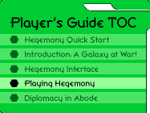

|
Playing HegemonyNow that you've read about the Hegemony interface, you could probably start playing the game if you wanted to. The following section offers details on how everything works, precisely, and gives some more advice on how to play (and enjoy) the game. A Galaxy of StarsThe whole game of Galactic Emperor: Hegemony is about stars. Or, more precisely, taking stars. At the end of the game you want to have the most stars, preferably all of them. If so, you can say you're the winner. You're going to start the game with one star — your homeworld. It's usually one of 150 populated stars in the galaxy. There are eleven other homeworlds out there as well, belonging to those other Overlords that think the galaxy belongs to them. You're going to have to prove them wrong. An Overlord's homeworld is named after him. Other stars will have different names, depending on the type of game you're playing in. In a regular game all other stars will be named with short titles like "C3" and "E7". If you capture a star before its been named properly you'll have the opportunity to rename it with the Rename Star button. In a trial game all of the stars will instead be prenamed; you have to become a subscriber to Skotos if you want to exercise your creativity! Each star also has two base stats, which appear to the right of the star in the galactic display, separated by a colon. They are "wealth:ships". Wealth shows how much money you earn from the planet each day. It varies between 1 and 10. Ships shows the total garrison of ships currently stationed on that planet. When you start a game of Hegemony you'll find yourself surrounded by neutral stars, controlled by Overlords who have not yet perfected the Pinpoint Drive technology. These planets will typically be garrisoned by 2-20 ships. You'll want to take out as many of these as you can when you start to the game, to increase your daily wealth and thus give you the opportunity to buy more factories, build more ships, and take over more planets. Just don't overextend yourself. You'll lose ships attacking those neutral planets, but the real fireworks won't begin until you meet your interstellar opponents. Remember that you can always use the System Info button to look up information on planets. This is useful if you've lost a planet and are considering regaining it. Through this menu you can look up how many factories it had when you last held it, what it wealth was, how many fleets your enemy attacked with, etc. Space StationsSpace stations are a very special type of planet. They can be bought through the Purchase button, but you probably won't want to do this until late in the game, because they're expensive. When you purchase a space station, you convert an existing planet. Space stations are effectively planets that move. Their rate of movement is 3x slower than your ships, but they'll get around as the game progresses. When you want to move a space station, just go to the Dispatch button. You'll be able to select a space station to move, and then will get to move it in a cardinal direction, up to your maximum range. Space stations can be stopped once they're moving, unlike fleets, but they'll always complete their current parsec of travel. Fleets can continue going to and from space stations even when they're moving. The fact that Space stations can move offers many strategic possibilities, among them: (1) you can use them as mobile fleet carriers, pushing a factory world deep into enemy space; (2) you can use them in the opposite fashion, to get a recently won factory planet out of enemy space; or (3) you can use them to bypass or create choke points. Space stations can also be used to destroy enemy planets. If you run a space space station into another planet, both will be destroyed. Death shields do not protect from space stations run amok. If you see a space station pointed at one of your worlds, your only chance is to take over the station and stop it before impact (or else turn your planet into a station and flee). Ships & TechnologyThe whole game of Galactic Emperor: Hegemony is also about ships. Or, more precisely, building ships. At the end of the game if you've been the most cunning in balancing your ship building and your technological advancements, you'll probably find you have the most stars too. You'll start a typical game with 250 ships, all stationed on your homeworld. These are the ships that you'll want to use to complete your initial expansion. All ships are affected by three factors which may be wound in the "Technology & Cash Information" portion of your display. They are:
There are four ways to move ships in Hegemony:
Combat: Fighting Other ShipsClearly you're not going to be able to take over the galaxy without some combat. At first you'll be fighting battles with those nearby neutral Overlords, but within a few days you'll be expanding into the space of other Overlords with Pinpoint Drive technology. A combat occurs whenever a fleet of ships arrives at at a star controlled by enemy forces. In general if two equal-sized fleets with the same battle score fight each other, the defender will win slightly more than half the time. However, there are a few additional factors:
The exact formula for combat looks like this:
The Overlord with the higher total wins the battle but loses a proportionate amount of his fleet; the Overlord with the lower total is wiped out. Example: Filber (battle power 135) attacks star system Marrac with 75 ships; he gets a random multiplier of .81. Marrac is owned by Rupes (battle power 100) who has 30 ships there; he gets a random multiplier of 1.08.
As would be expected from the fleet sizes, Rupes loses. Still, he takes about as many ships with him as he possibly could. The number of ships lost by Filber are based on the ratio 3240 / 9481.5 = 34.17%. Filber loses 26 ships total, leaving him with 49. Factories: Building More ShipsAs you fight combats, you'll lose ships and your initial fleet of 250 will begin to dwindle. This is why you must build factories — to replenish your forces. Factories are built at stars. The total number of factories at a star will be visible on the galactic display, directly under the star. Each factory will produce one ship a day. In a typical game factory production occurs once a day. By clicking the Purchase button you can see when ships are produced in your current game. All of your ships will appear at that same time each day. Warning: production time shifts with American daylight savings time. Factories tend to be chief targets in the war for the galaxy. Thus, you should make sure you defend your factories well. There are many philosophies for doing so. Some players build all of their factories on their home planet, to take advantage of the 50% home planet defense bonus. Others scatter them across numerous stars, to defend them from death probes. Some build them right on their opponents' front lines, to increase the number of ships they have readily available for combat. Some hide them in planets behind their home planet which are less likely to be attacked. Use your best judgement, but be sure to build factories when you have money and be sure to defend them well, particularly just before daily production. Wealth & PurchasesThe element that connects ships to stars is wealth. Every star you take has a wealth factor. Your home planet will be a 10 while the other stars you conquer will typically be between 1 and 9. This is the amount of cash that the star produces each day. Once more day, production occurs. Then is when you receive the wealth from all the stars you currently hold and each of your factories produces one ship. Currently, production occurs at 10am Pacific Time. Adjusting for Daylight Savings Time that's either 1700 GMT or 1800 GMT at different times of the year. Once you get your daily production wealth you can turn it into factories which will build ships which can be used to take new stars ... It's a wonderful cycle. Cash can also be used for a variety of other things, all available through the Purchase button in your Command Pad. The following are the costs in a typical game:
Two additional purchases are not found on the Purchase button, but rather under Spy Probe and Death Probe:
You will also notice interest accruing on unused cash that you have. This interest will accrue once a day, at the daily production. Spy & Death ProbesThere is one last minor system in the game of Hegemony: probes. There are two types of probes, spy probes and death probes, and in return there are two types of shields, spy shields and death shields. SpiesSpy probes are used to gain information on a planet. They are launched from the Spy Probe button and are dispatched much like fleets. There is an option to double the range of a spy probe for double the cost. Spy probes always go at twice your normal speed. If a spy probe encounters a planet without a spy shield it is successful. You will see factory, wealth, and fleet information about the spied planet in your Newswire. Your opponent will not know that he was probed. If a spy probe encounters a planet with a spy shield it is unsuccesful. You will see that your spy probe was blocked. Your opponent will see that you tried to spy on him. DeathDeath probes are used to destroy a planet. They are often used on home planets, factory worlds, stars where fleets are massing, or stars that are part of a route of attack. They are launched from the Death Probe button and are also dispatched much like fleets. However, you must enter the destination planet twice and release the safety in order for them to go off. There is an option to double the range of a death probe for double the cost. Death probes always go at twice your normal speed. If a death probe encounters a planet without a death shield it is succesful. Everyone in the game will see that the star was destroyed, but not by whom. If a death probe encounters a planet with a death shield it is unsuccesful. You will see that your death probe was blocked. Your opponent will see that you tried to destroy his star. As discussed under "A Galaxy of Stars", space stations can be used as an alternative to death probes; stations can't be stopped by death shields, but they can be halted if the station is taken over. The Art of DiplomacyAlthough not a game system, per se, you almost guarantee yourself a loss in a game of Galactic Emperor: Hegemony if you do not conduct diplomacy. There are two main routes for diplomacy in the game.
There tend to be two types of major agreements in Hegemony:
An excellent discussions of NAPs and Alliances also appears in the Hegemony forums. Usually you want to engage in some diplomacy with a few other Overlords before the game starts. If you sign some NAPs and form some alliances you'll have the best opportunity to emerge victorious. If you try and go it alone you will probably be bitterly defeated early in the game. You should alway consult the players' directory, linked in to each player via the Player Stats button before deciding on a NAP or alliance, as a player's directory page may include comments on how trustworthy a player is. At the end of any regular game you will have the opportunity to rate the other players in the game, giving you an opportunity to reward your friends and punish any who betrayed you. Winning the GameUltimately the game is about forming a Hegemony — a state which will rule over others. The best victory you could gain is to take over the entire galaxy — all 150 stars. However, this doesn't tend to happen in regular games because of the necessity to form alliances in order to win the game. At a low level you can consider yourself a victor if you manage to survive to the end of the game. Usually between 6 and 10 Overlords are wiped out completely between game's end. At a higher level you can consider yourself a victor if you ended the game holding the most stars. At the end of a regular game your score will be added to your statistics in the player directory and you'll have an opportunity to be added to the Hall of Fame, also linked from the Play Now page. |